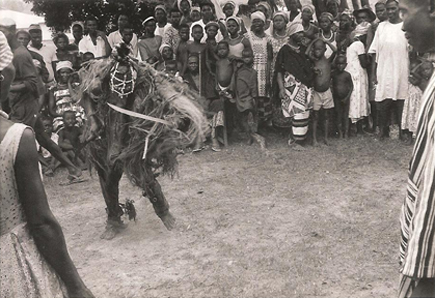

Introductory. Some minor examples: Bushman ‘plays’; West African puppet shows. Mande comedies. West African masquerades: South-Eastern Nigeria; Kalahari. Conclusion.
I
How far one can speak of indigenous drama in Africa is not an easy question. In this it differs from previous topics like, say, panegyric, political poetry, or prose narratives, for there it was easy to discover African analogies to the familiar European forms. Though some writers have very positively affirmed the existence of native African drama (Traoré 1958, Delafosse 1916), it would perhaps be truer to say that in Africa, in contrast to Western Europe and Asia, drama is not typically a wide-spread or a developed form.
There are, however, certain dramatic and quasi-dramatic phenomena to be found, particularly in parts of West Africa. Many are of great interest in themselves, particularly, perhaps, the celebrated masquerades of Southern Nigeria. Furthermore, some discussion of such elements of drama helps to throw light on oral literature in general in Africa.
There are other reasons why some discussion of ‘drama’ in Africa is essential. The subject is in many minds inextricably linked to the question of the origin of drama and to the interpretations of a particular critical school. The existence and supposed nature of drama, mimetic dances, or masquerades in Africa have been taken as evidence in discussions of the origin of drama. While many would now reject the assumptions (often inspired by Frazer’s Golden Bough) that are inherent in the evolutionist approach, works built on such assumptions still circulate widely and provoke an interest in the question of what sort of drama can be found in Africa.1 It is, in fact, natural that students of the nature and history of European drama should be interested in comparative evidence of analogous forms in Africa. In addition, interpretations of literature in terms of myth and archetype might at first sight be expected to draw particular support from a knowledge of African dramatic forms.
It is clearly necessary to reach at least some rough agreement about what is to count as ‘drama’. Rather than produce a verbal definition, it seems better to point to the various elements which tend to come together in what, in the wide sense, we normally regard as drama. Most important is the idea of enactment, of representation through actors who imitate persons and events. This is also usually associated with other elements, appearing to a greater or lesser degree at different times or places: linguistic content; plot; the represented interaction of several characters; specialized scenery, etc.; often music; and—of particular importance in most African performances—dance.

Figure 25. Masked Limba dancer and supporters, Kakarima, 1962 (photo Ruth Finnegan).
Now it is very seldom in Africa that all these elements of drama come together in a single performance. One or several do of course occur frequently. But which, if any, of such performances are counted as fully ‘drama’ will depend on which of the various elements mentioned above are considered as most significant (a point, of course, that applies to more than just African dramatic performances). What is clear is that while dramatic elements enter into several different categories of artistic activity in Africa and are thus worth consideration here, there are few or no performances which obviously and immediately include all these dramatic elements.2
In order to bring out the respective significance of these various elements we will look first at some minor forms. This will be followed by a discussion of the more obviously dramatic forms of West Africa—the comedies of the Mande-speaking area and the complicated masquerades of South-Eastern Nigeria.
II
The emphasis on histrionic ability in story-telling has already been mentioned.3 Stories are often enacted in the sense that, to a greater or smaller degree, the speech and gestures of their characters are imitated by the narrator, and the action is largely exhibited through dialogue in which the story-teller directly portrays various characters in turn. It is true that such enactment of character is not sustained or complete, that straight narration, as well as dramatic dialogue, is used to communicate the events of the story, and that only one real ‘actor’ could be said to be involved; thus story-telling can only be spoken of as possessing certain dramatic characteristics, rather than being ‘drama’ in the full sense. Nevertheless, these dramatic aspects are of the greatest importance in the telling of stories. It has been said of written literature that drama, unlike prose narrative, is not ‘self-contained’ but depends on other additional elements for its full effect. Precisely the same point could be made of oral narration. As Delafosse writes of certain storytellers in the Ivory Coast: ‘J’ai entendu des griots raconter des histoires au cours desquelles ils faisaient parler leurs héros et qui devenaient dans leur bouche de véritables scènes de théâtre à personnages multiples représentés par un acteur unique (Delafosse 1916: 355).
This similarity to dramatic performance is heightened by the frequent occurrence of music and sometimes even rudimentary dance movements. It is common for the story-teller to begin a song in the course of the narration—often a song sung by, or representing the actions of, one of the characters—and for this to be taken up antiphonally by the audience acting as chorus, in this way partaking in the dramatic enactment of the story. Occasionally too the storyteller stands and moves among the audience. If most African peoples lack specialized drama, they yet, by the very oral nature of their art, lay greater stress on certain dramatic characteristics of their literature than do cultures that rely primarily on written forms.
A very different side of dramatic art is exhibited by the Khomani Bushman plays described by Doke (Doke 1936; cf. also Schapera 1930: 203ff). Here the linguistic element is apparently non-existent, but the action is portrayed completely through the imitation of several actors. Among the southern Bushmen in particular, there is also some attempt to make themselves up to resemble the animals represented by using paint, or the skins or horns of animals. These ‘dramas of the desert’ (Doke 1936: 465). represent the different stages in hunting. Doke describes ten of these plays, and considers that since they depend on imitation and mimicry they have to be considered as drama. In the ‘springbok and lion play’, for instance, the various animals are portrayed: the girls take the part of the springboks, with the little children as kids, while two or three men act the lions. First the kids, then the springboks are shown as being stalked by the lions with a vividness that makes it into ‘a very exciting drama’ (Doke 1936: 466). ‘The gemsbok play’ Doke regards as ‘probably the Bushman masterpiece of dramatic representation’ (Doke 1936: 467). In it, one man acts the part of the gemsbok, with a forked stick tied or held to his forehead to represent the horns, and imitates its actions and gait. He is pursued by three or four armed huntsmen and by boys acting as dogs who look out the spoor. The gemsbok is chased, then finally turns at bay. After an exciting fight the play is ended by the death and dispatch of the gemsbok by the hunters and their dogs.
It is possible that similar mimicry and dramatization, particularly of hunting, occur elsewhere in Africa. However, I know of no descriptions of such plays (or dramatic performances of any other kind) from Bantu Africa as a whole, with perhaps the exception of a certain dramatization sometimes found in rituals like initiation and funeral rites.4 For our other examples of dramatic or quasi-dramatic phenomena we must turn to West Africa, where we can find more elaborate forms ranging from mere puppet shows to the plays of the Mande-speaking peoples of the savannah areas and the masquerades mainly typical of the forest region. These can be discussed in turn.
There are several passing references to puppets in West Africa, though, it seems, few detailed descriptions of their performances. They have been recorded as appearing, in various forms, in the north of the Ivory Coast, in Bornu, Zaria, Bida, and other places in Northern Nigeria and Niger, and occasionally in Southern Nigeria (Delafosse 1916: 355; Ellison 1935; Labouret and Travélé 1928; Murray 1939: 218; Pageard 1962). It is uncertain how long a history they have in these areas.5
One detailed description has been given of a puppet show in Bornu (Ellison 1935). Here the puppets consist of rag dolls that fit over the manipulator’s hand rather like gloves and are shown through the opening in a kind of tent made by draping a large gown over a stick planted in the ground. The manipulator speaks for the puppets in a special voice produced by half swallowing pieces of ostrich egg-shell; the shrill whistle that results is barely intelligible and the words are therefore repeated by an assistant standing by. In the performance that Ellison witnessed there were eight short scenes, each lasting three to four minutes and complete in itself. Only two puppets could appear at a time, but there were about six in all, and during the intervals while they were being changed inside the tent, the audience were entertained by drummers and singers. The scenes portrayed involved a clear plot, speech, suitable costumes for the parts enacted, and dramatic and exaggerated action. One scene, for example, showed a thief entering a man’s house and on the point of making off with his booty when the owner’s wife wakes and gives the alarm; the husband appears and dramatically gives the thief a sound beating. Another included a coy Shuwa Arab girl dressed in a long flowing gown with cowries in her hair who sings and dances, and thus captivates a married man; he, inevitably, is caught by his wife and is scolded and beaten; and the scene ends with a realistic fight between the husband and a bystander who has come to see what is happening. A final example is about a rest-house keeper. He is told by the village head that the District Officer is coming—a very particular and fussy D.O., we are informed—and that the rest-house must be very well swept, and wood and water all provided with the greatest care. The D.O. arrives dressed all in white, complete with white pith helmet, and is shown being greeted with exaggerated respect by the village head. But, the story continues, the rest-house turns out to be not exactly spotless and the scene ends with its keeper being severely reproved.
Are such shows to be called drama? Certainly they include most of the dramatic elements we have already mentioned: the enactment of character and events; several actors, albeit in puppet rather than human form; plot; linguistic content; specialized costume; and a limited amount of singing and dancing as well as interval music. In a way it seems unsuitable to call this form drama; and it is worth noting that even in Bornu it seems to have been relatively rarely practised and not regarded as a serious form of art. Still, it must be accepted that the plots and attitudes involved are very similar to some of those in the Mande ‘plays’ described later, and that even puppet shows can be used to comment comically and dramatically on the events and characters of everyday life.
III
Of much greater interest are the comedies of certain Mande-speaking peoples in the savannah areas of ex-French West Africa. These, perhaps alone among African enactments, would seem fully to satisfy most of the normal criteria for a truly dramatic play. They have clear plot and linguistic content, as well as music, dancing, costume, definite audience, and the interaction of several human actors appearing at once in the village square that acts as a stage. They are described as ‘véritables pièces parfaitement ordonnées et réglées, destinées à exposer une intrigue déterminée, en employant pour interpréter celle-ci des acteurs humains. On peut donc affirmer, dans ces conditions, qu’il existe bien un théâtre soudanais’ (Labouret and Travélé 1928: 74).
One group of these plays—those of the Mandingo—were described in some detail by Labouret and Travélé in 1928. They are all comic, intended for entertainment and the realistic portrayal of the characters and faults of everyday life. As implied by the Mandingo term kote koma nyaga, the plays treat especially of marriage and the various misfortunes of married life, but also involve satirical comment on many other aspects of life. The authors are also actors.
These comedies are said to have been performed every year in the Bamako and Bougouni cercles of what was then French Soudan, in the region of the old Mali kingdom. The normal occasion is after the harvest, between October and March. In the evening the audience is called to the open village square where, with no scenery or special building, the comedies are presented in the open air, lit either by the moon or by lanterns and candles. Each evening’s entertainment follows a fixed order which Labouret and Travélé term respectively the opening ballet (kote don), the prologue, the presentation of the players, and, finally, the plays proper.
The proceedings begin with the announcement of the kote koma iiyaga at about eight in the evening; people hurry to the square and sit ready, with the children running around among the spectators. The drum orchestra enters and takes its place in the centre, and the young men and women start to dance in a slow, circular movement. This makes up the opening ballet. Then the orchestra withdraws to the edge of the square and the choir of women and girls group themselves around it ready to take up the actors’ singing. Meanwhile the actors (almost always men) are preparing in a nearby house, dressing and making up by covering the face and body with clay or ash to create a fantastic or ridiculous appearance. They dress themselves for comic effect, with torn clothes and the various implements which they need for their roles.
When the actors are ready, this is made known and the audience fall silent. At first only a cry is heard from an invisible actor calling on the audience in set phrases which are answered, line for line, by the chorus. Then the actor makes a hesitating entry. He presents a strange appearance, partly naked, his body covered with white ash, a short torn cloak on his shoulders, an old turban on his head, and rags hanging down his back. The orchestra persuade him to call the others, so he runs to the entrance and calls his comrades in an exaggerated and burlesque way, miming his impatience, listening for them, and running round the different entrances. At last the other actors enter. Each is dressed according to his role: one is an infirm old man, another is blind, lame, or a leper; other stock characters include an idiot, an unskilful hunter, a brigand, an adulterer, a deceived husband, a thief, and a sorcerer. They go right round the square, singing and dancing, and then retire, marking the end of the prologue and presentation.
These introductory sections are followed by the comedies themselves of which several are performed one after the other. These include titles like ‘The boastful coward’, ‘The adulterous wife’, ‘The deceived hunter’, ‘The sorcerer with large ears’, and ‘Thieves of yams’. The play entitled ‘The kola seller and the flirtatious wife’, one of seven described by Labouret and Travélé, can illustrate the type of plot and action involved. The dramatis personae are: the seller of kola nuts; Fatimata, a coquettish woman (played by a young man); Fatimata’s husband; the chorus; and the orchestra.
Fatimata enters and sits in the centre, simpering, with a mirror on her knees; she is wearing an exaggerated dress with huge pearls in her hair and colossal bracelets. The kola seller comes in hesitatingly with his basket of kolas and asks the orchestra if this is a good place for selling kola nuts. When the musicians reply that it is, and, furthermore, that there is a pretty woman there too, the kola seller protests that he is not concerned with women, and dances in the square calling out ‘kolas for sale’. As he dances, he catches sight of Fatimata (still making herself up). He goes up to her, calling out persuasively about his kolas. When asked the price, he offers her a few kolas free, and steals up to her to present them. The scene is repeated several times—and results in his discovery that he has given all his merchandise away! The kola seller bemoans his fate exaggeratedly: all is finished, Fatimata has deceived him. She replies self-righteously: the kola seller for his part, she says, has been interfering with the end of her loin cloth. At first indignant at this charge, he finally decides he might as well be hung for a sheep as a lamb, and tries to pull her cloth right off. Up to now Fatimata has been all complaisance. But—the kolas finished—she now turns defensive and there is a violent tussle between her and the kola seller, with great leaps and vivid representation, prolonged or contracted according to the skill of the actors. Attracted by the noise, Fatimata’s husband now makes an imposing entry. When he hears Fatimata’s version of the story he attacks and beats the kola seller, and the play ends with him chasing his rival from the stage with Fatimata, all innocent, by his side.
A similar comedy was reported by Delafosse in 1916 from the Bambara (also Mande-speaking) who use the same term, kote koma nyaga, to refer to their plays. Again the characters are a wife (acted by a man), her husband, and her lover. The action takes place in the village square, surrounded by spectators, and with an orchestra and choir to take up and echo the actors’ songs.
The man and his wife enter and ask permission from the village elders (the orchestra) to set up house. Then, while the husband is occupied in building their hut, his wife catches sight of the third actor, her would-be lover. For the time being they have no opportunity to be together. But time passes and at last the husband’s crops are planted and ready for harvest (the whole process being vividly mimed by the actor). When they have harvested the crop the wife offers to go and pick off the seeds—an excuse, of course, to be with her lover in the fields. But it is not long before her suspicious husband follows them. She sees him first—as she thinks—and hastily buries her lover under a pile of stalks. The husband pretends he has seen nothing and sits down. Then follows a conversation, with the husband on his side pretending ignorance, the wife more and more alarmed as detection seems to approach nearer:
| Husband. | Have you finished picking off the seeds? |
| Wife. | Yes. Here they are in my basket. |
| Husband. | Well, you carry the seeds, I’ll take the ashes. |
| Wife. | (Taken aback) What ashes? |
| Husband. | I’m going to burn the stalks. |
| Wife. | (More and more alarmed) You can burn them tomorrow. Let’s go home now. Husband. No, I’m in no hurry, I’m going to burn them now. |
| Wife. | (Very alarmed) Don’t you see the storm coming? |
| Husband. | (Still pretending not to notice anything) Yes I see. If it rains I’ll cover the ashes with my coat. |
| Wife. | The wind will blow it all away before you can collect it up. |
| Husband. | (Decidedly) I’m not going until I have burned that straw. |
He sets fire to the pile while his wife dances round it singing. At this the lover pushes his way out and takes to his heels, while the husband rushes after him shouting ‘Catch the rat that’s escaped from my pile of stalks’ (repeated several times). The three actors disappear and the audience bursts into laughter (Delafosse 1916: 352–4).
From these two examples of Mande comedies, it can be seen that both plot and characterization are simple and depend for their effect very largely on the actors’ art: we are told that they display great talent, based on keen observation and the exact imitation of gesture, voice, and intonation (Labouret and Travélé 1928: 92). The characters are conventional types. Most popular of all is the deceiving wife, represented (as in stories from the same locality) as a flirtatious and capricious liar, with both her actions and her husband’s jealousy satirically and comically portrayed. Similar stock characters also appear in Mandingo plays: the leper, ridiculed for his lack of fingers and consequent awkwardness; the thief; the coward; the boaster; and the sorcerer represented as an old woman, ugly and infirm, with huge ears and a frightening appearance.6
These plays can be counted as comedies, satires on the foibles and ridiculous aspects of everyday life, particularly, marriage. In this sense they can be called drama even though it is drama enlivened by music, dance, and mime as well as spoken conversation. However, such comedies, it appears, have only a limited distribution—basically among certain Mande-speaking peoples of Mali, Soudan, and the Ivory Coast.7 Even within West Africa they are not widespread and—on present evidence at least—they provide the exception rather than the rule for full dramatic performances in Africa.8
IV
The final class of dramatic phenomena to consider are the masquerades of West Africa. These are widespread in this part of Africa (including, to some extent, the Mande area) and take many different forms, but seem to be especially developed in the southern (forest) areas where the carving of wooden masks has reached such a high degree of artistic development. The masquerades—dances of masked figures of various kinds—probably vary throughout the region in content, purpose, and pattern, but they all seem to include certain elements of drama and are often referred to as ‘plays’. There is generally the idea of some kind of enactment or representation by the masked figure with great emphasis on costume (especially masks) and on music and dancing. On the other hand, there seems to be little or no linguistic content, though there is sometimes a rudimentary plot.
Rather than trying to describe all variations, I will speak of masquerades in South-Eastern Nigeria. It is in the forest (or once forest) regions of this area among the Ibo, Ijaw, and Ibibio peoples that, in the words of G. I. Jones, ‘Nigerian masked plays reach their greatest development’ (Jones 1945: 191). Even in this fairly circumscribed region there are variants enough. But it is clear from Jones’s article (‘Masked plays of South-eastern Nigeria’),9 that they all share certain common features. There is always some religious element, a belief, for instance, that the masked figures are in some sense supernatural, or closely associated with supernatural beings. There is the disciplinary element expressed in the awe in which the masked dances are held by women and the uninitiated: the men who produce the play are initiates of a secret society whose mysteries and rules they are bound to keep. Finally, there is always an element of pageantry and display; ‘however secret the society there is always an occasion when the community is inspired by the spectacle of the supernatural beings parading round in public, resplendent in all the finery the society can provide’ (Jones 1945: 196).
In different areas one or another of these aspects is to the fore. Thus in the Cross River region, where secret societies have such central importance, the element of display and pageantry is relatively undeveloped and the local ‘spirit plays’ stress the macabre and supernatural ‘to a degree unequalled in any of the other masked plays’ (Jones, 1945: 196). Among the Ibo, by contrast, with their democratic and independent traditions, the religious and disciplinary aspects have relatively little significance. There are many Ibo, Ibibio, and Ijaw groups, furthermore, who choose to use these masked plays primarily as vehicles for their artistic talent. ‘Here the play itself is the important thing; the supernatural element, particularly the feeling of fear, recedes and comedy and a sense of fun takes its place’ (Jones, 1945: 192; cf. also Messenger 1962). There is much display of fine costumes, masks, drumming, dancing, and singing. Acting too has a place:
Usually this acting is limited to each mask playing its own particular role without regard to the other characters, but in a few plays the masks act together in a complete drama. In one Ogoni play, for instance, all the masks appear as a group of decrepit old men and hold a meeting guying the local village elders. In another play the mask called ‘Doctor’, after boasting greatly of the potency of his medicines, tries them out on the mask called ‘Rain Maker’ and poisons him; in terror he appeals to Kamalu, the god of the rain, and after much comic byplay and bargaining as to the value of the sacrifice he must make to Kamalu, he succeeds in bringing ‘Rain Maker’ to life again.
(Jones 1945: 192–3)
Important varieties of masked plays in South-Eastern Nigeria are the Ibo and Ibibio ghost plays. These are enacted by dancers wearing true masks (i.e. right over their faces) and often elaborate costumes. The Northern Ibo ghost play (Mau), for instance, often includes a great variety of characters wearing masks or carved heads (or both). These masks have conventional meanings. Some are represented as masculine, some as feminine; some are fierce, some comic, some (mostly the feminine ones) beautiful. It is the ‘beautiful’ masks, portrayed according to Ibo ideas of stylized beauty and feminine character (but in fact worn by men), who do most of the actual dancing; first the ‘daughter’ masks appear and dance, then the ‘mothers’, and finally the ‘grandmother’ mask performs her solo dance. The comic masks amuse by clowning, whereas the fierce ones are meant to frighten. Some are so fierce (especially those combining the features of lion, elephant, and buffalo) that they must be kept on a leash by their attendants; others are used to keep the crowd back from the dancers, and threaten them with whips. Miming and sometimes parody seem to be highly developed in these ‘plays’. In one instance,
When the play has just begun a white-faced mask with a cavalry moustache, wearing white ducks and a spotless sun-helmet, stalks into the arena and casts a supercilious eye over the scene. The play stops, the mask languidly signals them to proceed and strolls over to sit amongst the audience in the seat of honour. This character is Oyibo the White Man.
(Jones 1945: 193)
The importance of miming and even satire is brought out by another writer on Ibo masquerades (Boston 1960). In northern Iboland it is apparently the dramatic element that has been developed at the expense of the religious. But even here the element of plot is very undeveloped indeed compared to the emphasis on music and dancing. Boston expresses clearly the Ibo order of priorities when he writes:
Each type of masquerade has a characteristic rhythm, which is produced by a subtle and intricate combination of voices, instruments, and stylized movement, and this rhythm supplies a compulsive force to the performance, as the plot does in European drama. It also creates a dramatic link between the various elements of the masquerade, which are often scattered in different parts of the village.
(Boston 1960: 55)
Though there are several other types of Ibo and Ibibio ghost plays besides those mentioned, all seem to share the characteristic of less emphasis on plot than on miming, music, and dancing.
The third main variety of masquerade in South-Eastern Nigeria comprises the Ijaw water-spirit plays. The plays of one group of Ijaw peoples (the Kalabari) have been discussed by Horton and the outline of his account is followed closely.10 In these plays too there is an emphasis on music, dance, and costume at the expense of linguistic content.
The plays are staged by the Kalabari Ekine Society. This is a religious and artistic association for men, separately organized in each Kalabari community. Each such society stages a cycle of thirty to fifty masquerade plays. The society is divided into grades through which members can progress according to their skill and on payment of a small fee. Each society has its own headman and certain other officials and its own rules of behaviour; one of the strictest of these is the idea of concealment of certain activities from women. The plays themselves are connected with water spirits, and in the myths about their origin we are told how a woman was once abducted by the water spirits and was shown their special plays before she returned home; they were then taken over by the men as an art or recreation, but their religious significance was still remembered.
In these masquerades there are comments and accompanying songs. The subject-matter a covers diversity of social experience; though it is ostensibly concerned with the activities of water spirits, in fact it clearly reflects the everyday life of Kalabari town and village, portrayed in a realistic manner:
Perhaps the commonest theme is that of the ferocious male warrior, laying about him with matchet or spear, his violence set off by the plump, comely, slow-moving figure of his wife. This pair is portrayed by some of the most widely distributed masquerades such as Agiri, Egbelegebe, Egbekoro, and Seki. Then there is the dignified, opulent ‘house head’ portrayed by masquerades like Gbassa and Alagba. Or the massive, stolid character portrayed by the maskers of Otobo—a water spirit who is thought of as part man, part hippopotamus, and who is addressed in song as ‘Beast who holds up even the flowing tide’. By way of contrast, there is the cunning, amoral hypocrite portrayed by Ikaki—’Tortoise’. Or the sexy, good-for-nothing aristocrat Igbo, of whom they sing: ‘His father’ sent him to market to buy yams; but instead he bought woman’s vagina. O! Igbo, son of a chief! O! Igbo, son of a chief!’ Or again, there is the native doctor Ngbula, grunting around with grim concentration in search of bad medicines and evil spirits: suspicious like all of his profession that people are talking ill of him, and breaking off from time to time to make ferocious charges at his supposed detractors among the Ekine members. Female water spirits, too, sometimes take the central place in a masquerade. Notable among these is Igoni; a garrulous, self-pitying old widow who alternately bemoans her own and everyone else’s troubles
(Horton 1963: 97).
But in spite of the existence of such plots and of some linguistic content in songs and comment, this aspect of Ekine masquerading is only of secondary importance. It is worth quoting Horton at some length on this point, for he makes absolutely clear that it is the dancing and the drumming rather than the linguistic element which is the important part of these dramatic performances:
Diverse as they are … the verbalized themes of the masquerade are never very elaborate. All that can be said about the characters portrayed in a particular play takes no more than a sentence or two. And the plots of the Egbert tableaux are sketchy in the extreme—especially if one compares them with the rich narrative which the Kalabari weave about the water spirits in other contexts. There is, in fact, a good reason for this sketchiness and brevity. For the masquerade is not intended as the enactment of verbal narrative. Its dominant symbols are those of rhythmic gesture, dictated by the drum; and in so far as its verbal commentaries have a use, it is one of directing attention to the broad area in which the meaning of the dance gestures lies. Words here provide no more than a bare, crude outline of meaning, and it is left to the language of the dance to fill in the detail which makes the masquerade rich and satisfying to its audience [my italics].
If an Ekine member is asked how he recognizes a particular play, he does not start to talk about the character portrayed or about the plot of the Egberi. He starts by imitating the rhythm of its drums; and perhaps, if there are no women about, by dancing a few of its characteristic steps. By this, he is able to convey the distinctive features of the play: for every masquerade has its own characteristic set of drum-rhythms, beaten on a characteristic combination of drums ….
The value which Ekine sets on the dancer’s attunement to the drum does much to explain why its members consider possession by the masquerade spirits to be the crowning achievement of the expert performer. In Kalabari thought, all symbols of the gods are instinct with their presence. Now the drum-rhythms of each masquerade are symbols of its spirit ‘owner’, and as such they too are vehicles of his presence. So, saying that the spirit ‘owner’ has taken charge of the dancer’s body is a natural way of describing the ideal state of attunement in which the drum-rhythms seem to have taken over the man’s movements from his conscious will and thought. That these are indeed two ways of describing the same experience is suggested by the reply of a gifted dancer whom I asked what it was like to become possessed during the dance. As he put it: ‘One plays until, as it were, the drum pushes one around’
(Horton 1963: 98–9).
Besides verbalized content and rhythm, a third element in these Kalabari masquerades consists of the costumes, of which the most distinctive part is the headpiece, sometimes including a wooden mask. This mask is regarded as distinct from the rest of the costume and is the ‘name’ of the masquerade, so that even when it is not in fact visible to the spectators it still plays a part. But even the masks have only a secondary role compared to the dancing. ‘The real core of the masquerade lies in the dance and … by and large other elements are only considered important in so far as they contribute to it’ (Horton 1963: 100).
Horton concludes that despite certain functions of Ekine activity (its significance as a status symbol or organ of government) the essential values ‘can only be called aesthetic’ (Horton 1963: 111). Why then, if the masquerade is first and foremost an art, does it retain close associations with religion? Horton argues that reacting to a human performance as a work of art seems to involve two main factors: first, an ability to exchange practical workaday reactions to the subject-matter for some sort of attitude of contemplation—’an eye which is engaged yet somehow aloof’ (Horton 1963: 103); and secondly, a suspension of personal reactions to the actor as a known individual in favour of a concentration on his role in the performance. Now in modern Western theatre and ballet these requirements are usually fulfilled without much difficulty. The theme of play or ballet is often removed from the first-hand experience of the audience; so too are the actors, so that the problem of suspending personal reactions to them as individuals does not arise. But in a small-scale homogeneous society like that of the Kalabari the situation is very different:
In the first place, the greater uniformity of social experience means that the audience will have had first-hand exposure to the subject-matter of almost any dramatic performance. In their case, the subject-matter is always near the bone. Secondly the performers are always personally known to most of their audience.
(Horton 1963: 104)
The Kalabari solution to these difficulties can be found in the religious context of the masquerades. First, by associating the plays with water spirits, the Kalabari can, in a complex way, disentangle them from the too human and personal context. Furthermore the actors’ water spirit disguise makes it relatively easy for the spectators to concentrate on the play itself, on the roles rather than the individuals. This also helps to explain the prohibitions laid on women in connection with Ekine activity (as well as with West African masquerades elsewhere). It is not that they are forbidden all knowledge of the masquerades: indeed, they are its principal spectators. What they are forbidden is to know of or suggest any connection between masquerades and an individual player. In Kalabari masquerades the masks, the costume, the religious associations and prohibitions all serve to bring about the ‘psychical distance’ essential in dramatic art.
This discussion of West African masquerades tends to one main conclusion. That is, that though these performances possess certain of the elements we associate with drama, the emphasis is very different from that of most modern European drama. Even where there are some linguistic content and plot, these always seem secondary to drumming and its essential counterpart, dancing. As Horton suggests it seems that ‘at least in certain areas of West Africa, the dance overshadows sculpture, painting, architecture, and literature as the leading traditional art’ (Horton 1963: 112).11
How far can the discussion in this chapter be said to be relevant for the study of African oral literature? With a few possible exceptions, there is no tradition in Africa of artistic performances including all the elements that might be demanded in a strict definition of drama—or at least not with the emphases to which we are accustomed. We can go further and add that what dramatic or quasi-dramatic performances can be discovered never seem to involve tragedy in the normal sense. The events and characters are depicted as comedy, and treated more or less realistically, even cynically. Though costumes and masks are sometimes important, there is no evidence of specialized scenery or of buildings or sites specifically designed for theatrical performances. The players are sometimes skilled experts or belong to artistic associations such as the Ekine Society, but there is no tradition of professional actors. The audience, finally, is sometimes a ‘pure’ audience in the sense that it appreciates without itself taking part directly; but, with the significance of the dance and the absence of the ‘proscenium barrier’, there is often a tendency to greater audience participation than is typical of most recent Western drama.
We can also make other negative points. Little direct light is thrown on the question of the origin of drama by a study of African dramatic forms—except possibly in the vague sense that it might be said to enlarge our general view of the possibilities of drama, or of certain elements in drama. Similarly it adds little support to the kind of interpretation of drama which relies on the idea of tragic archetypes and of rituals ultimately referable to The Golden Bough.
However, one positive point does emerge. Though different elements of drama are stressed in different African cultures, one theme that seems to run through almost all these African performances is the overriding significance of music and dance and the secondary importance of the spoken word. Even in the Mande comedies, which at first sight seem most to resemble the more verbalized type of European drama, the stress laid on words seems to vary: what is constant is the emphasis on dance, song, and mime. Further research obviously needs to be done on this. But it does appear that, at least in West Africa (the area that provides the most highly developed dramatic forms), we would be mistaken to look only at the verbal content in any discussion of drama and miss the rich traditions in music and dance which form essential elements in dramatic performances.12 Though there may be no ‘plays’ in quite the Western sense, these indigenous artistic forms nevertheless possess some of the elements we associate with drama. They present a dramatic representation of life in a detached and yet somehow more direct and active way than can be conveyed through descriptive words alone, and in this way provide a complement to the various forms of oral literature already described.
Footnotes
1 e.g. F. M. Cornford, The Origin of Attic Comedy, and A. H. Krappe, The Science of Folklore, which both adopt this line, have each appeared in new paperback editions in the 1960s.
2 The plays of certain of the Mande-speaking peoples of West Africa, discussed later, are one possible exception.
3 See Ch. 13.
4 Cf. especially installation rites and annual ceremonies to do with kingship, such as those described, for instance, in Kuper (1947: Ch. 13) for the Swazi aspect of dramatization and symbolism in ritual (and the various interpretations of this) is too large to enter on here and is not, in any case, directly relevant to a treatment of literature.
5 Puppet shows in Bornu are said to have begun in the mid-nineteenth century according to Ellison (1935: 91)
6 Ivory Coast ‘animal ballets’ are even more burlesque and include more clowning and miming and less linguistic content (Prouteaux 1929).
7 The plots and tone of some of the Northern Nigerian puppet shows have something in common with these plays and possibly indicate a wider incidence than as yet appears.
8 On these comedies see also Meillassoux 1964. For the way in which some modern skits in Mali owe much to traditional dramatic forms, see Hopkins 1965.
9 Jones 1945. I draw very heavily on this article here; also on Boston 1960, and Horton 1963. See also Messenger 1962; Horton 1966, 1967; and Jones 1934.
10 Horton 1963; cf. also 1966; 1967. There is not, unfortunately, space to do justice to the subtlety of his discussion.
11 For further references to ‘drama’ in Africa see the bibliographies in Shore 1962: 50–3 and Traoré 1958. There is a detailed and sympathetic account of Ijebu (Yoruba) masquerades in Ogunba 1967. See also the briefer report in Clark and Gibbs 1967, especially Chaps. 1, 2, and Bibliography.
12 Traditions exploited in modern literature by, for instance, the ‘Yoruba folk operas’ described by Beier 1954, and the musical and balletic emphases in productions by recent West African playwrights.